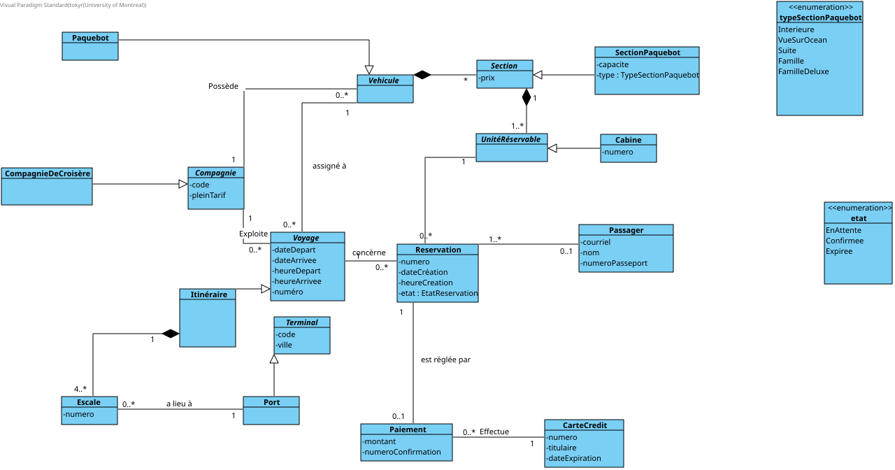
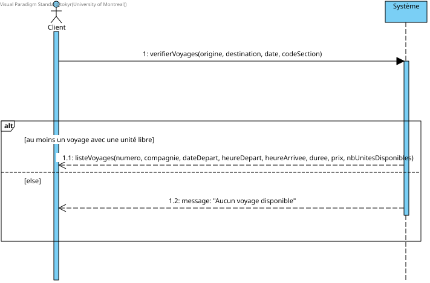
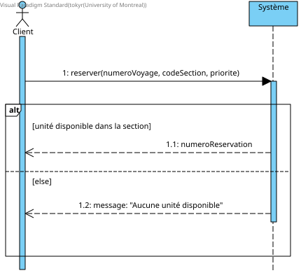
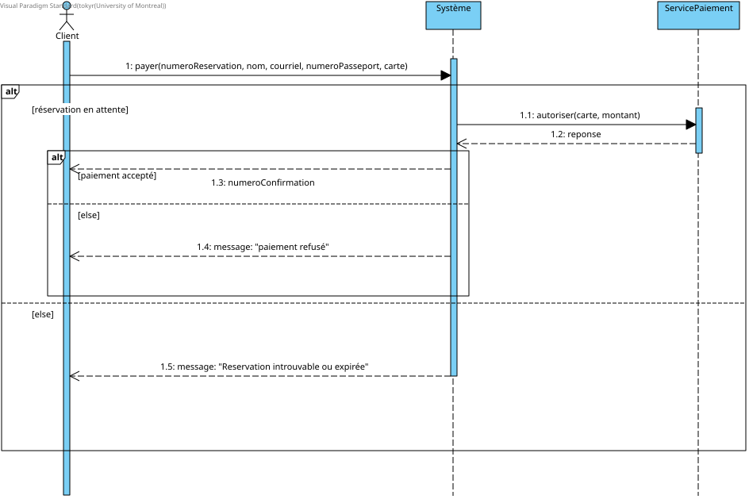
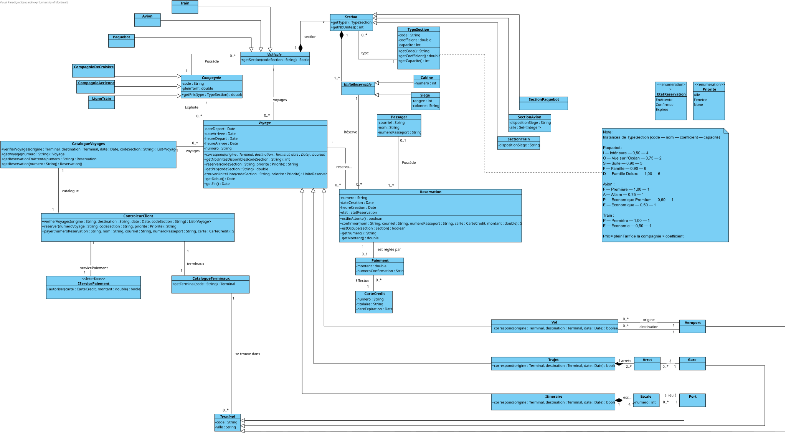
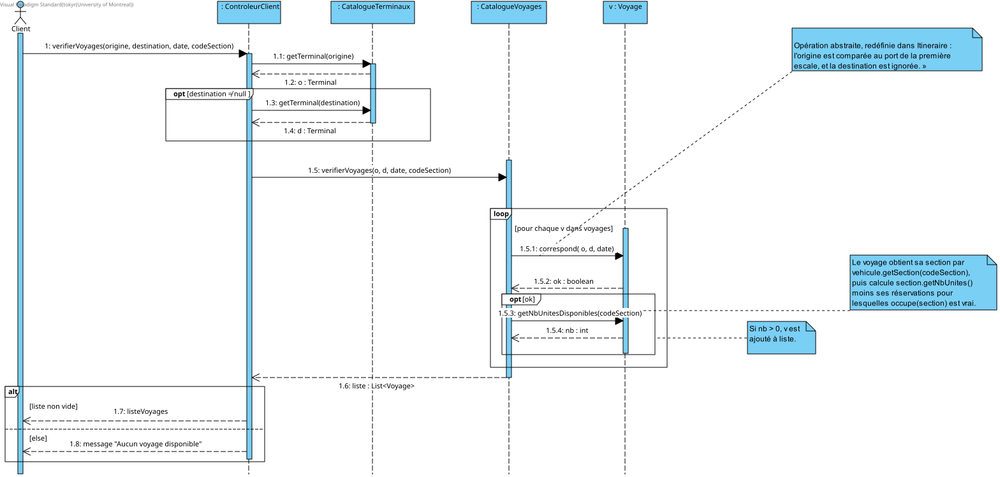
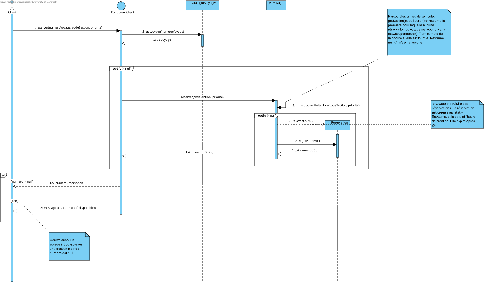
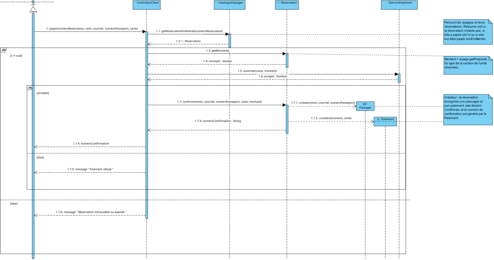
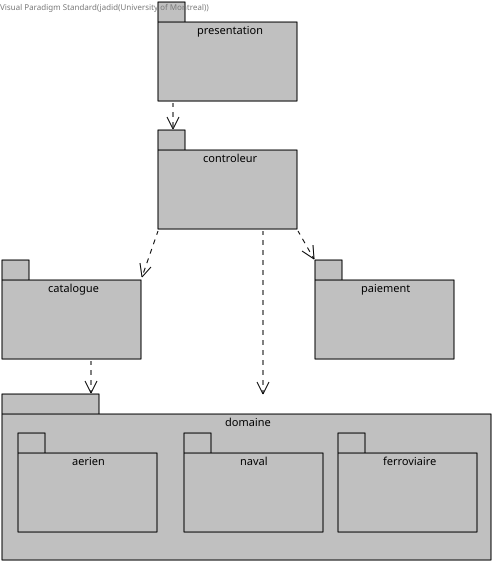

IFT 3911 - Devoir maison 1 - Système de réservation de voyages
| Nom | Matricule (4 derniers chiffres) | Courriel | Temps sur le devoir |
|---|---|---|---|
| Toky Erick Rabenantoandro | 6409 | toky.erick.rabenantoandro@umontreal.ca | 24h |
| Gabriel Barroso | 3304 | gabriel.barroso@umontreal.ca | 25h |
| Membre 3 | XXXX | 20h |
repo github : https://github.com/Toky5/IFT3911-dev1
Date est un type ordonné (<, <=) qui a l'opération plusJours(n : Integer) : Date. Voyage a les opérations getDebut() et getFin(), qui combinent la date et l'heure de départ ou d'arrivée.
Fichier : diagrammes/Domaine/DCC.svg

Fichier : diagrammes/Domaine/DSSVerifierDesVoyages.svg

Fichier : diagrammes/Domaine/DSSReserverUneUnite.svg

Fichier : diagrammes/Domaine/DSSPayerReservation.svg

Fichier : diagrammes/Design/DC.svg

Fichier : diagrammes/Design/DSVerifierLesVoyages.svg

Fichier : diagrammes/Design/DSReserverUneUnite.svg

Fichier : diagrammes/Design/DSPayerUneReservation.svg

Fichier : diagrammes/Design/DP.svg
Une contrainte qui vaut pour plusieurs modes est écrite une seule fois sur la classe commune (Vehicule, Voyage).
context Vehicule
inv: self.voyages->forAll(v1, v2 | v1 <> v2 implies
v1.getFin() <= v2.getDebut() or v2.getFin() <= v1.getDebut())
context Voyage
inv: self.reservations->select(etat = EtatReservation::Confirmee)
->isUnique(passager.numeroPasseport)
On compare le numéro de passeport parce qu'un nouvel objet Passager est créé à chaque paiement.
context Voyage::reserver(codeSection : String, priorite : Priorite) : String
pre: self.getNbUnitesDisponibles(codeSection) > 0
post: self.reservations->size() = self.reservations@pre->size() + 1
and self.reservations->exists(r | r.numero = result
and r.etat = EtatReservation::EnAttente
and r.passager->isEmpty())
context ControleurClient::payer(numeroReservation : String, nom : String,
courriel : String, numeroPasseport : String, carte : CarteCredit) : String
pre: self.catalogue.getReservation(numeroReservation).etat = EtatReservation::EnAttente
post: let r = self.catalogue.getReservation(numeroReservation) in
r.etat = EtatReservation::Confirmee
and r.passager.numeroPasseport = numeroPasseport
and r.paiement.numeroConfirmation = result
« Un aéroport est identifié par un code de trois lettres unique à chaque aéroport »
context Aeroport inv: self.id.size() = 3 Aeroport.allInstances()->isUnique(id)
« Une compagnie aérienne est identifiée par un code de deux lettres unique à chaque compagnie »
context CompagnieAerienne inv: self.id.size() = 2 CompagnieAerienne.allInstances()->isUnique(id)
Appartenance de l'avion : « Chaque vol est assigné à un avion appartenant à la compagnie aérienne qui l'exploite »
context Vol inv: self.avion.CompagnieAerienne = self.CompagnieAerienne
Non-chevauchement des vols : « Un même avion peut être assigné à plusieurs vols, mais deux vols assignés au même avion ne peuvent pas se chevaucher »
context Vol inv:
Vol.allInstances()->forAll(v1, v2 | v1 <> v2 and v1.avion <> v2.avion)
implies
((v1.dateArrivee < v2.dateDepart)
or (v1.dateArrivee = v2.dateDepart and v1.heureArrivee <= v2.heureDepart))
or
((v2.dateArrivee < v1.dateDepart
or (v2.dateArrivee = v1.dateDepart and v2.heureArrivee <= v1.heureDepart)))
Format et unicité de l'identifiant de vol : « Un vol est identifié par un ID formé du code à deux lettres de la compagnie aérienne suivi d'exactement quatre chiffres. L'ID complet est unique à chaque vol »
context Vol inv: -- Taille de l'id self.id.size() = 6 -- Id unique Vol.allInstances()->isUnique(id) -- Une partie de l'id du vol, c'est l'id de la compagnie aerienne self.id.substring(1, 2) = self.CompagnieAerienne.id
Aéroports distincts : « L'aéroport de départ et d'arrivée d'un vol doit être différent »
context Vol inv: self.origine <> self.destinantion
« Un avion comporte des sièges organisés en maximum 100 rangées et 10 colonnes. Chaque siège est identifié par sa section (F, A, P, E), son numéro de rangée et la lettre de la colonne (A-J). Les sièges peuvent être disposés selon quatre possibilités au sein d'une section :
context Siege inv: self.rangee <= 100 context Siege inv: self.colonne >= 'A' and self.colonne <= 'J' context Siege inv: self.sectionOfSiege.dispositionSiege = 'S' implies self.colonne >= "A" and self.colonne <= 'C' context Siege inv: self.sectionOfSiege.dispositionSiege = 'C' implies self.colonne >= 'A' and self.colonne <= 'D' context Siege inv: self.sectionOfSiege.dispositionSiege = 'M' implies self.colonne >= 'A' and self.colonne <= 'F' context Siege inv: self.sectionOfSiege.dispositionSiege = 'L' implies self.colonne >= 'A' and self.colonne <= 'J'
context Section inv:
self.dispositionSiege = 'S' or
self.dispositionSiege = 'C' or
self.dispositionSiege = 'M' or
self.dispositionSiege = 'L'
context Section inv:
self.typesSection = 'F' or
self.typesSection = 'A' or
self.typesSection = 'P' or
self.typesSection = 'E'
context Section inv:
self.dispositionSiege = 'S' implies self.aile = Set{1}
context Section inv:
self.dispositionSiege = 'C' implies self.aile = Set{2}
context Section inv:
self.dispositionSiege = 'M' implies self.aile = Set{3}
context Section inv:
self.dispositionSiege = 'L' implies self.aile = Set{3, 7}
context Siege::reserver() pre: self.disponible = true pos: self.disponible = false
context Paiment :: payer(montant : Real,
carteCredit : String,
)
pre:
montant>0
context Reservation ::confirmer(passager: Passager)
pre:
self.passager = null
pos:
self.passager = passager and self.statut = 'CONFIRMEE'
context Itineraire inv dureeMax14Jours: self.getFin() <= self.getDebut().plusJours(14)
context Itineraire inv auMoinsTroisPortsDistincts: self.escales.port->asSet()->size() >= 3
asSet() enlève le port de départ qui revient à la fin.
context Itineraire
inv boucle:
self.escales->sortedBy(numero)->first().port
= self.escales->sortedBy(numero)->last().port
context Trajet inv garesUniques: self.arrets->isUnique(a | a.gare.code)
Compagnie, Vehicule, Voyage, Section, UniteReservable, Terminal) : les trois modes ont les mêmes associations. Elles sont placées une seule fois au niveau commun et chaque mode ajoute ses sous-classes. Ça permet aussi d'écrire une seule fois les contraintes OCL communes.Itineraire et Port ne garde ni l'ordre ni les doublons. Chaque escale a un numéro et pointe vers un port.| Classe | Principe | Raison |
|---|---|---|
| ControleurClient | Contrôleur | Reçoit les opérations système du client (verifierVoyages, reserver, payer) et délègue le travail. |
| CatalogueVoyages | Fabrication pure, Expert | Connaît tous les voyages. Retrouve un voyage ou une réservation à partir de son numéro. |
| CatalogueTerminaux | Fabrication pure, Expert | Convertit les codes reçus de l'interface en objets Terminal. |
| IServicePaiement | Variations protégées | Isole le service de paiement externe. Le contrôleur ne dépend que de l'interface. |
| Voyage | Expert, Créateur | Connaît son véhicule et ses réservations : calcule les unités disponibles et crée les réservations. |
| Itineraire | Polymorphisme | Redéfinit correspond() : l'origine est le port de la première escale et il n'y a pas de destination. |
| Reservation | Expert, Créateur | Connaît son état et son unité. Crée le Passager et le Paiement lors du paiement. |
| Compagnie | Expert | A le plein tarif, donc calcule le prix d'un type de section. |
| TypeSection | Forte cohésion | Regroupe le code, le pourcentage et la capacité d'un type de section. C'est une classe plutôt qu'une énumération parce que chaque type a des données. |
| Tâche | Membre 1 | Membre 2 | Membre 3 |
|---|---|---|---|
| Diagramme de classes conceptuel | 33,3 % | 33,3 % | 33,4 % |
| Diagrammes de séquence système | 33,3 % | 33,3 % | 33,4 % |
| Diagramme de classes logiciel | 33,3 % | 33,3 % | 33,4 % |
| Diagramme de séquence : vérifier les voyages | 100 % | 0 % | 0 % |
| Diagramme de séquence : réserver | 0 % | 100 % | 0 % |
| Diagramme de séquence : payer | 0 % | 0 % | 100 % |
| Diagramme de paquets | 33,3 % | 33,3 % | 33,4 % |
| Contraintes OCL | 33,3 % | 33,3 % | 33,4 % |
| Justifications et rapport | 33,3 % | 33,3 % | 33,4 % |
Responsable principal du voyage naval et du diagramme de séquence « Réserver une unité ». Participation à la conception des diagrammes de classes conceptuel et logiciel, aux contraintes OCL communes, au diagramme de paquets et à la révision du rapport.
Responsable principal du voyage aérien et du diagramme de séquence « Vérifier les voyages ». Participation à la conception des diagrammes de classes conceptuel et logiciel, aux contraintes OCL communes, au diagramme de paquets et à la révision du rapport.
Responsable principal du voyage ferroviaire et du diagramme de séquence « Payer une réservation ». Participation à la conception des diagrammes de classes conceptuel et logiciel, aux contraintes OCL communes, au diagramme de paquets et à la révision du rapport.